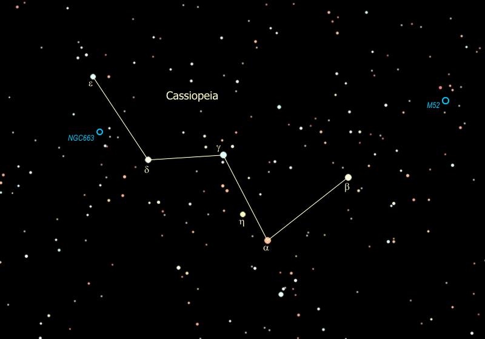

About Me
I spent a significant amount of my life in Halifax Nova Scotia before moving to the United States. I began my university education at Dalhousie University (physics and computer science) before switching to Saint Mary's University to pursue astrophysics. I completed my BSc in Honours Astrophysics in 2020, under the supervision of Dr. Ivana Damjanov.

Paragraph 1